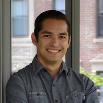

Luis F. Campos
Statistics Ph.D. Student
Harvard University


About me
I'm a Graduate Student in Statistics at Harvard University. I'm interested in broad applications of statistical principles and modeling to solve complex problems. In recent years I've become interested in advancing survey methodology, from the proper use of existing methods for survey experiments to developing new methods for functional or highly correlated responses using Bayesian modeling. I've also continued pursuing my interests in public health, and recently astrophysics, by collaborating with researchers and advancing existing methodology. Below you can find a list of past and current projects.
In my past I studied Mathematics and Statistics at the University of California, Davis, then more Statistics at University of California, Berkeley. After I had had enough of studying, I spent some time consulting in the San Francisco bay area before taking a position as a Statistician in the Biostatistics unit of the UC Irvine Institute for Clinical and Translational Sciences. I've always believed in developing statistical methodology using the bench-to-bedside approach and my time at UC Irvine helped me solidify this in practice.
Teaching
I've had the pleasure of assisting in teaching several semester-long courses, here are some.
- Statistical Inference I - Statistics 211, Harvard University in Fall 2017 with Lucas Janson
- Data Science - Computer Science 109B, Harvard University in Spring 2017 with Mark Glickman and others
- Statistical Inference I - Statistics 211, Harvard University in Fall 2016 with Tirthankar Dasgupta
- Introduction to Data Science - Biostatistics 260, Harvard University in Spring 2016 with Rafael Irizarry and Stephanie Hicks
- Data Science - Computer Science 109, Harvard University in Fall 2015 with Joe Blitzstein and others
- Introduction to Statistics - Statistics 21, U.C. Berkeley in Spring 2012
Education
- Ph.D. Statistics, Harvard University [In Progress]
- M.A. Statistics, University of California, Berkeley [2012]
- B.S. Mathematics and Statistics, University of California, Davis [2009]
Working Papers
Methodology:
- Campos LF, Miratrix LW (2017) Bayesian Modeling of Functional Data in Survey Sampling, manuscript.
- Campos LF, Jones DE, Kashyap V, van Dyk DA, Siemiginowska, A (2017) Disentangling Overlapping Astronomical Sources using Spatial, Spectral and Temporal Information.
- Campos LF, Yuan LH, Feller A, Miratrix LW (2017) Estimating Causal Effects with Zero-Inflated Outcomes.
Medical Applications:
- Kandil A, Nguyen DV, Yeung ST, Campos LF, Chang EY (2017) Pain perception in taekwondo: relationship to injury, experience and time loss. Submitted.
- Akbari Y, Maybhate A, Chen C, Nguyen DV, Campos L, Liang L, Payton A, Jia X, Thakor NV, Geocadin RG (2015) Orexin-A improves arousal from coma in an asphyxia cardiac arrest rodent model. Manuscript.
Publications
2017
- Campos LF, Senturk D, Chen Y, Nguyen DV (2017) Bias and estimation under misspecification of the risk period in self-controlled case series studies. Stat, 6: 4–13 doi:10.1002/sta4.166.
- Miratrix LW, Sekhon JS, Theodoridis AG, Campos LF (2017) Worth Weighting? How to Think About and Use Sample Weights in Survey Experiments. Preprint on arXiv:1703.06808.
2015
- Book Review - Sudipto Banerjee, Bradley P. Carlin, and Alan E. Gelfand, Hierarchical Modeling and Analysis for Spatial Data (2nd ed.) with Zach J. Branson and Luke W. Miratrix. Journal of the American Statistical Association, 110(512), 1818–1824
- Covarrubias N, Bhatia S, Yee S, Campos L, Nguyen DV, Fish D, Chang E (2015) The relationship between taekwondo training habits and injury: A survey of a collegiate taekwondo population. Open Access Journal of Sports Medicine, 6, 121-127. PMID: 25960680
2013
- Jason Lee MD, Michael Lin, MD, Luis Campos, MA Danh V. Nguyen PhD, Robert Newcomb PhD, David P. Zamorano, MD. (2013) Association between Gentamicin and Acute Renal Insufficiency in Trauma Patients with Open Fractures.
2012
- Hamlin A, Sukharev D, Campos L, Mu Y, Tassone F, Hessl D, Nguyen DV, Loesch D, Hagerman RJ (2012) Hypertension in FMR1 premutation males with and without fragile X-associated tremor/ataxia syndrome (FXTAS). American Journal of Medical Genetics, 158A, 1304-1309. PMID: 22528549
2011
- Narcisa, V., Aguilar, D., Nguyen, D.V., Campos, L Brodovsky, J., White, S., Adams, P., Tassone, F., Hagerman, P.J. and Hagerman, R.J. (2011) A quantitative assessment of tremor and ataxia in female FMR1 premutation carriers using CATSYS. Current Gerontology and Geriatrics Research, vol 2011, Article 484713, 1-7.
2010
- Chonchaiya, W., Tassone, F., Ashwood, P., Hessl, D., Schneider, A., Campos, L Nguyen, D.V. and Hagerman, R.J. (2010) Autoimmune disease in mothers with the FMR1 premutation is associated with seizures in their children with fragile X syndrome. Human Genetics, 128, 539-548. PMID: 2080927
- Schwartzkroin, P.A., Wenzel, H.J., Lyeth, B.G., Poon, C.C., DeLance, A., Van, K.C., Campos, L and Nguyen, D.V. (2010) Ketogenic diet modulation of seizure sensitivity and cell loss following fluid percussion injury. Epilepsy Research, 92, 74-84. PMID: 20863664
- Chonchaiya, W., Tassone, F., Ashwood, P., Hessl, D., Schneider, A., Campos, L., Nguyen, D.V. and Hagerman, R.J. (2010) Autoimmune disease in mothers with the FMR1 premutation is associated with seizures in their children with fragile X syndrome. Human Genetics, 128, 539-548. PMID: 2080927
- Garcia-Arocena, D., Yang, J.E., Brouwer, J., Tassone, F., Iwahashi, C., Berry-Kravis, E.M., Goetz, C.G., Sumis, A.M., Zhou, L., Nguyen, D.V., Campos, L., Ludwig, A., Raske, C., Leehey, M., Greco, C., Willemsen, R., Hagerman, R.J., Hagerman, P.J. (2010) Fibroblast phenotype in male carriers of the FMR1 premutation alleles. Human Molecular Genetics, 15, 299-312. PMID: 19864489
Talks
Research Presentations
- Bayesian Modeling of Functional Data in Survey Sampling, Harvard University, 4/19/2016 (slides)
- Estimation under misspecification of the risk period in the self-controlled case series method with application to vaccine safety studies (continued work) - WNAR/IMS, University of Hawaii at Manoa, 6/17/2014
- A solution to the misspecification of the optimal risk period in the self-controlled case series method with application to vaccine safety - WNAR/IMS, UCLA, 6/16/2013
Other Presentations
- California State Summer School for Mathematics and Science, 2016 Guest Lecture - U.C. Irvine, 7/22/2016 (slides)
- A career in graduate school - Connecticut College, 6/24/2016 (slides)
- Reversible Jump MCMC - 6.882 at MIT, 3/29/2016 (slides)